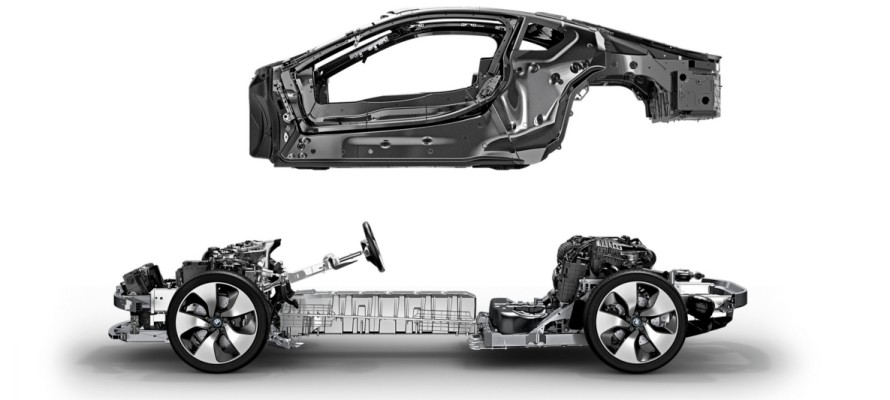

i8는 자세한 제원이 공개되어 있지 않습니다.
BMW i8은 배터리 무게를 상쇄하기 위해 혁신적인 신소재를 사용하였고 볼트와 나사까지도 알루미늄으로 제작했습니다. 탄소 소재로 제작한 탑승 공간은 경량 구조의 정수를 보여주고 있습니다. 강철보다는 50%, 알루미늄보다는 30%나 가볍지만 강성이 훨씬 뛰어난 탄소섬유 강화 플라스틱을 사용해 충돌 안전성을 높였습니다. 혁신적인 라이프-드라이브(Life-Drive) 구조를 채택한 BMW i8는 스포츠 드라이빙의 미래를 비롯해 자동차의 모든 것을 바꾸어 나가고 있습니다.
스포츠카의 균형 잡힌 비율과 우수한 경량 구조를 녹여 완벽하게 하나로 탄생시킨 BMW i8는 자동차 경량 구조에 있어 새로운 장을 열어 갑니다. 라이프-드라이브(Life-Drive) 구조는 지능형 경량 구조를 실현하는데 필요한 2개의 독립 모듈로 이루어져 있습니다. 드라이브 모듈은 차량의 앞과 뒤에 각각 배치한 고전압 배터리와 구동 시스템을 알루미늄 섀시 내에서 하나로 결합시킵니다. 몸에 꼭 맞는 맞춤 정장처럼 경량구조 컨셉을 완벽하게 구현한 BMW i8이 도로 위에서 스포티한 주행의 역동성과 지속 가능한 효율성을 실현합니다.